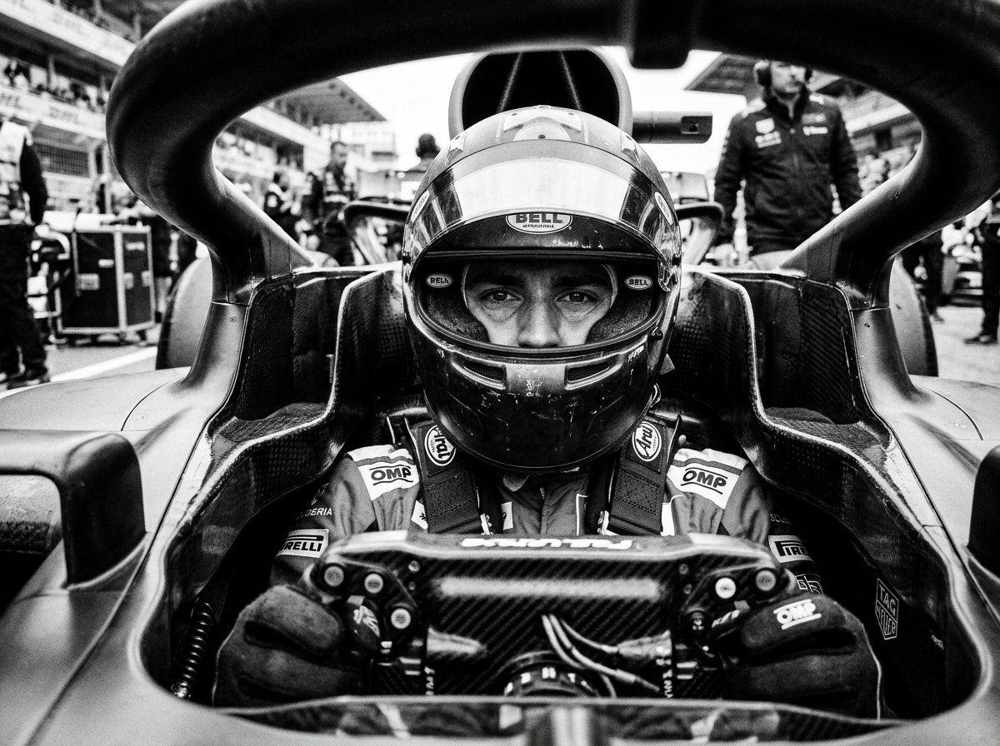
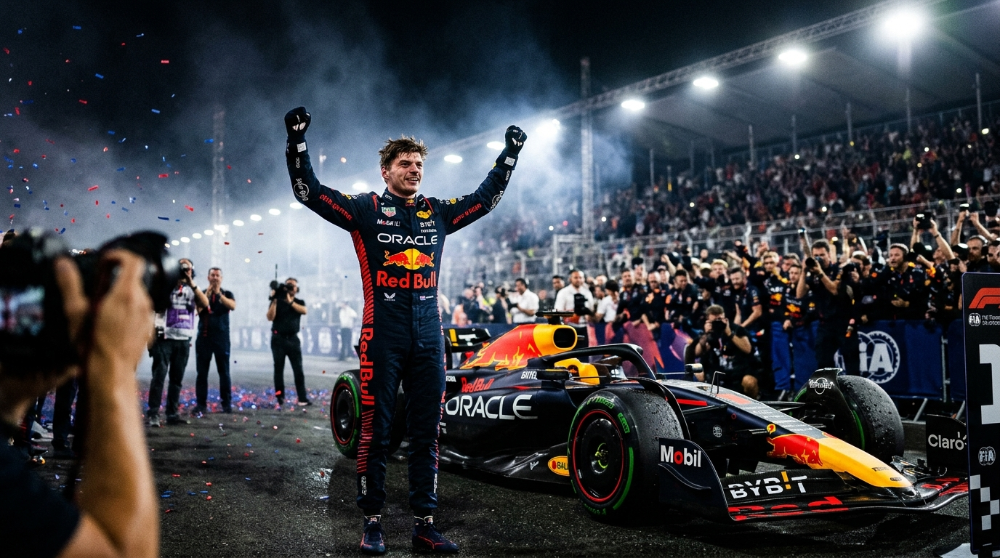
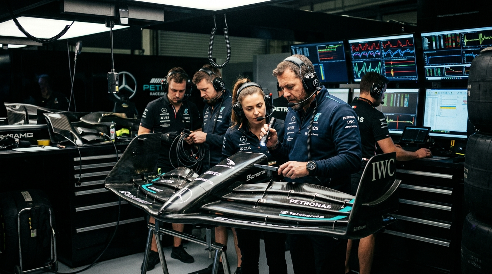

Pilotos vs. Constructores
En F1 hay dos títulos por año. El de Pilotos premia al corredor con más puntos; el de Constructores premia a la escudería (fábrica) que suma los puntos de sus dos autos y define el reparto millonario de premios.
Lo que esconden los campeonatos de la Fórmula 1.
Calentamiento en la Grilla · 6 Preguntas
Mundial de Constructores (2000–2025) · La realidad del podio
En 26 temporadas oficiales de la FIA compitieron 35 constructores distintos, pero apenas seis lograron levantar el título. Presiona cada equipo para desplegar sus coronas y dimensionar la concentración en la cima.
Presiona una escudería para ver sus triunfos.
Fuente: Elaboración propia a partir de registros oficiales del Campeonato Mundial de Constructores de la FIA (2000–2025).

Analizamos cómo se distribuyen las victorias en esta competencia, identificando si existen condiciones reales de que todos los equipos ganen.
En F1 hay dos títulos por año. El de Pilotos premia al corredor con más puntos; el de Constructores premia a la escudería (fábrica) que suma los puntos de sus dos autos y define el reparto millonario de premios.
Puntúan los 10 primeros de cada carrera (25 pts al 1°, 18 al 2°, 15 al 3°... hasta 1 pt al 10°). (Nota: hasta 2009 el ganador recibía 10 puntos).
A diferencia de otros deportes, en la F1 el auto representa gran parte del rendimiento: aerodinámica, motor e inversión tecnológica marcan diferencias estructurales durante años.
Ferrari es el único equipo que ha competido en todas las temporadas del Campeonato Mundial de Fórmula 1 desde su inicio en 1950.
Dominio por Temporada · 2000–2025
Medir cuántas carreras gana el campeón en un mismo año revela cuándo el título se decide por superioridad aplastante o en campeonatos más abiertos.

Línea roja: efectividad del campeón · Línea azul punteada: referencia del 50%
Fuente: Base de datos de Antonia Castillo, temporadas 2000–2025.
Tras la corona de Nico Rosberg en 2016 con el 42,86% de los triunfos (9 de 21), Lewis Hamilton encadenó cuatro títulos consecutivos al volante de Mercedes. Entre 2018 y 2020 superó de forma sostenida la barrera del 50%: ganó 11 carreras en 2018 y 2019 (52,38%) y escaló hasta el 64,71% en la temporada acortada de 2020 (11 de 17 Grandes Premios).
El cambio de era técnica en 2021 y la revolución aerodinámica de 2022 abrieron una transición inmediata en la punta de la parrilla. En 2021 Max Verstappen conquistó su primer mundial con el 45,45% de las victorias (10 de 22), y con el nuevo reglamento de efecto suelo en 2022 elevó su marca al 68,18% (15 triunfos), desplazando la hegemonía de Brackley.
La temporada 2023 marcó el techo histórico del período analizado: Verstappen ganó 19 de las 22 carreras disputadas (86,36%), dejando apenas 3 triunfos para el resto de la grilla y solo dos pilotos distintos en lo más alto del podio aparte del neerlandés. Un nivel de supremacía mecánica y deportiva sin precedentes en el siglo XXI.
A partir de 2024 el porcentaje del campeón volvió a descender por debajo de la mitad del calendario. Verstappen retuvo la corona en 2024 con 9 victorias en 24 fechas (37,50%), mientras que en 2025 Lando Norris llevó a McLaren al título de pilotos ganando solo 7 de 24 Grandes Premios (29,17%), demostrando que la regularidad volvió a pesar más que las rachas invictas.
La serie completa 2000–2025 confirma que no existe una fórmula única para ser campeón: desde títulos conquistados con menos del 30% de victorias (2008, 2010, 2012 y 2025) hasta temporadas de control casi total por encima del 70% (2004 y 2023). Aun así, en todos los ciclos de hegemonía técnica el margen de victorias del ganador se convierte en el termómetro directo de cuánta competencia real permite la parrilla.
En 2023, el neerlandés Max Verstappen ganó el 86,4% de las carreras de la temporada, es decir, 19 de 22 Grandes Premios.
Brechas y Competitividad Real · 2000–2025
Analizamos la diferencia de puntos entre el primer y segundo lugar de cada temporada. Cuando las brechas se estiran por decenas o cientos de unidades, el campeonato deja de ser una disputa abierta para la mayoría de la parrilla.
Rojo: 1° Campeón · Gris claro: 2° Subcampeón · Desde 2010: 25 pts al ganador
Fuente: Base de datos de Mariana Gajardo, temporadas 2000–2025.
Aunque la memoria colectiva suele recordar los finales dramáticos definidos en la última vuelta —como los campeonatos resueltos por apenas 1 punto en 2007 y 2008, los 2 puntos de diferencia en 2003 y 2025, o los 8 puntos que separaron a Max Verstappen de Lewis Hamilton en 2021—, esos desenlaces representan la excepción y no la regla estadística de la Fórmula 1 moderna.
Con el sistema de puntuación vigente desde 2010, las ventajas amplias se volvieron habituales: Sebastian Vettel cerró 2011 con +122 puntos y 2013 con +155; Hamilton superó por +124 unidades en 2020; y Verstappen llevó la desigualdad al extremo en 2022 (+146) y 2023 (+290 puntos sobre el subcampeón). Cuando el primero casi duplica al segundo, la mayoría de las 29 escuderías sin títulos ni siquiera compite en la misma categoría deportiva.
En 2023, Verstappen alcanzó 575 puntos y le sacó 290 puntos de ventaja a su inmediato perseguidor (Sergio Pérez, con 285), una diferencia equivalente a más de 11 victorias.
El Factor Económico · Costo por Punto (2015–2019)
Antes de la entrada en vigor del tope presupuestario, cada escudería competía con una billetera completamente distinta. Quienes invertían más financiaban desarrollo aerodinámico continuo que el resto jamás podía igualar.

Millones de dólares estadounidenses (USD M)
Fuente: Elaboración propia a partir de reportes financieros y presupuestos de escuderías F1 (2015–2019).
Entre 2015 y 2019 la Fórmula 1 vivió la recta final de su era sin límite de gastos. En ese lustro, Mercedes, Ferrari y Red Bull sostuvieron presupuestos anuales cercanos o superiores a los $400–532 millones de dólares, logrando transformar esa escala financiera en rendimiento: en 2016 Mercedes obtuvo 765 puntos a razón de apenas $0,46M por punto, mientras en 2017 Ferrari gastó $0,57M por cada unidad sumada.
En el otro extremo, gastar sin resultados multiplicó el costo real de competir: en 2015 McLaren invirtió $528,3M para cosechar solo 27 puntos ($19,57M por punto), y en 2019 Williams gastó $141M por un único punto en todo el año. Frente a esa brecha insostenible, la FIA implantó en 2021 el Budget Cap ($145M iniciales, reducidos a $135M base desde 2023) para intentar nivelar la parrilla.
Ya viste los números y la desigualdad en la pista. Ahora elige tu lado en la parrilla y súmate a su hinchada:
Simulador de Largada FIA ///
En una carrera real, los pilotos reaccionan en apenas 200 milisegundos cuando las luces cambian. Espera a que se enciendan las 5 luces rojas y detén el cronómetro lo más rápido posible apenas cambien a verde.
Listo en la grilla de salida